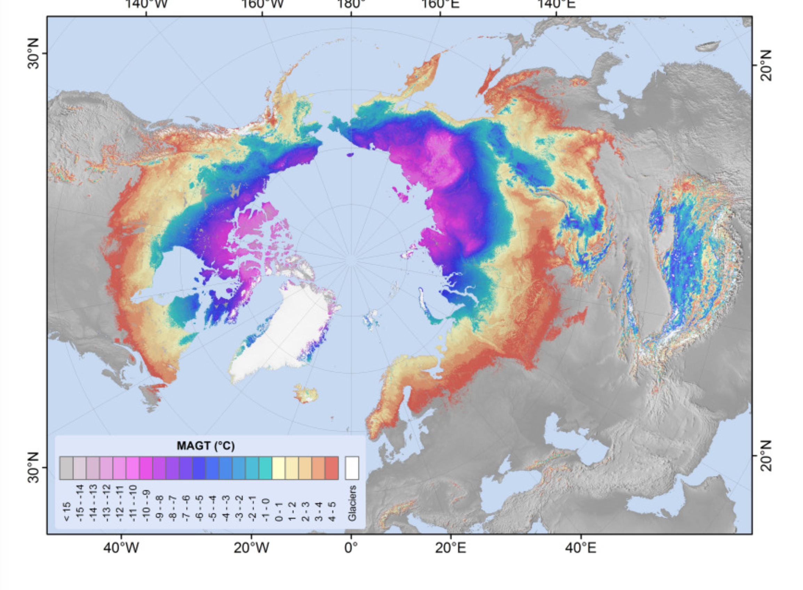
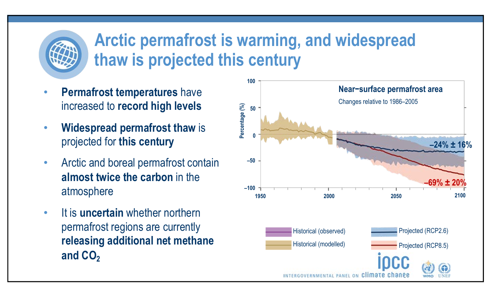

← Indicadores del cambio climático
¿Está cambiando el permafrost?
Los sondeos en profundidad muestran que el permafrost se está calentando.
El permafrost es terreno que permanece a 0 °C o menos durante al menos dos años consecutivos. Puede calentarse y seguir congelado. Cuando se funde el hielo que contiene, también puede cambiar el paisaje.
Evidencia y límites
Los investigadores midieron en profundidad, donde la oscilación de las estaciones apenas se percibe. El promedio resume los puntos de la red durante esa década. La evolución local depende de la profundidad y de las condiciones del terreno. Estudio global de 2019.
En las montañas europeas también se han comparado registros a distintas profundidades hasta 2022. Estudio regional de 2024.
La retroalimentación del deshielo
Cuando el permafrost se descongela, los microbios despiertan y descomponen ese carbono antiguo, liberando CO₂ y metano. El metano calienta entre 28 y 36 veces más que el CO₂ a 100 años, aunque dura menos en la atmósfera. Es un círculo vicioso clásico:
Por eso el permafrost es una de las grandes retroalimentaciones del sistema climático: no la encendemos directamente, pero responde a lo que emitimos. Reducir emisiones frena el bucle entero.
¿Cuánto permafrost superficial puede perderse de aquí a 2100? Depende, sobre todo, de nosotros:
Potencial de calentamiento del metano: NSIDC, citando a la EPA de EE. UU. Proyecciones de pérdida de superficie: IPCC SROCC (2019).
¿Dónde se encuentra?
Hay permafrost en regiones árticas, subárticas y de alta montaña. Dentro de una misma región, puede aparecer de forma continua o en zonas aisladas.


Para 2000–2016, un modelo del hemisferio norte estimó 20,8 millones de km² de región con presencia de permafrost. Dentro de ella, estimó 13,9 millones de km² de terreno con permafrost.
El carbono que guarda el terreno
1.460–1.600 Gt C
Estimación del IPCC para el carbono orgánico de los suelos de la región circumpolar septentrional de permafrost, incluidos depósitos superficiales y profundos. Una gigatonelada de carbono equivale a mil millones de toneladas de carbono.
El IPCC comparó esta reserva en 2019 con casi dos veces el carbono de la atmósfera. La fracción que puede liberarse depende del deshielo y de la descomposición de la materia orgánica.
Cómo se refuerza el calentamiento
- El terreno absorbe calor y aumenta su temperatura.
- Al descongelarse el terreno queda materia orgánica disponible.
- Los microorganismos descomponen materia orgánica y liberan CO₂. Donde escasea el oxígeno también puede formarse metano.
- Los gases que llegan a la atmósfera contribuyen a un calentamiento adicional.
↺ El calentamiento adicional vuelve a influir en el terreno.
Una superficie, dos escenarios
Reducción proyectada de la superficie de permafrost cercano a la superficie hacia 2100 respecto a 1986–2005.


La curva azul indica una pérdida del 24 % (±16 puntos porcentuales) bajo RCP2.6. La roja indica un 69 % (±20 puntos) bajo RCP8.5. Las bandas muestran la dispersión de las proyecciones.
IPCC · Proyecciones SROCC, página 13 del PDFExplorar el permafrost
Permafrost Ground Temperature
↳ 2 m depth
↳ Timeseries (T2m)